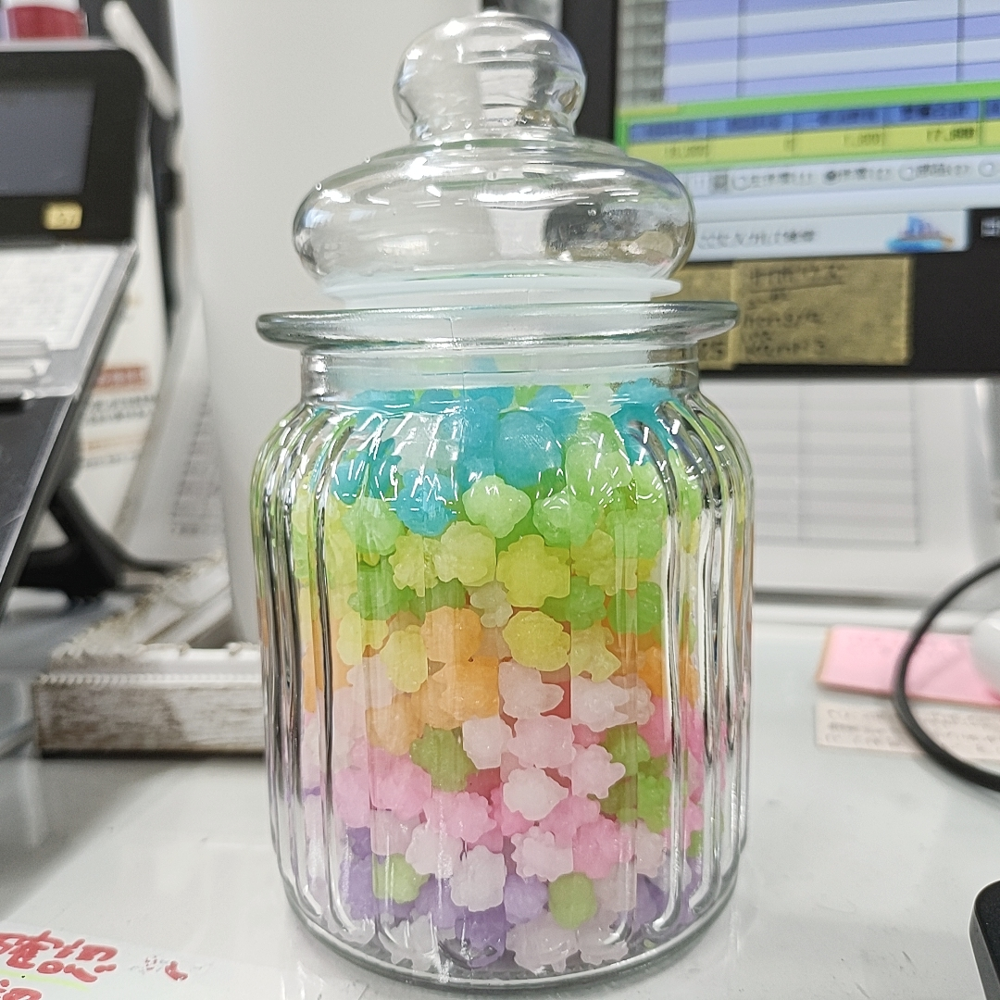

2024/05/26🌨
シュガーハイ👆🌈🎀💗✨🍭
昨日は、夜に更新予定でしたが、気が付いたら気を失うように深い眠りに誘われてました💦
眠ることと同じくらいに、甘いものが大大大大大っ好きなむにです🍭✨
職場のデスクの引き出しにおやつBOXを隠しているのですが……
目で見てもカワイイ、美味しいを実現したく推しの金平糖をビンに入れてみたらカワイイが完成✨

１日２０粒までとルールを決めてとりすぎないように👍
疲れた頭を癒して同時にテンション上げてくれます👆👆✨
あ、怪しいやつではないです✖💦
駄菓子屋さんとかに普通に売ってるやつですよ🙆✨
頭が足りないので、人が頭を使わないようなことでもフル回転しないとやってのけられないので、糖分は必須ですね～💦
目でも楽しめ、お口も喜び最高のおともです💞
一昨日のジムは頑張りすぎたようで、昨日から肩甲骨周辺の筋肉と、上腕二頭筋がかなり痛みます！
学生時代は筋肉痛くるとテンション爆下がりでした↷↷
しかし、不思議なことに大人になり(年齢だけ💦)トレーニングをするようになって、筋肉痛がくると
『おぉ！！筋肉育ってんじゃん！！よくやった！！！』
って、喜びがくるんですよね～（笑）
とらえ方、考え方、見え方の違いでこんなにハッピーに事が運べるなんて素敵ですよね✨
私のモットーは”機嫌は己でとれ！”なので、誰とは言いませんが気分屋の上司とか本っ当無理なんですね～💦(笑顔でやり過ごします！)
そういう考えに早く気付くことが私の人生は優勝だと思ってます✨🥇
最近、ボスの日記で”メタ思考”という考え方を初めて知りました！有難うございます✨
素敵な考え方の学びをより深めてハッピーライフLv.をUPていきたいです！！
ボスといえば、最新のボスの日記にYouTube動画の簡単な埋め込み方法があったので早速やってみました！
動画は、最近次男の翼が就寝前の子守歌に八マテいる惑星から発生するプラズマ波をNASAが機械を使って音に変換したものになります。
この動画に以外にもたくさんあって、寝付くまでこんな音がずっと鳴り響いてます（笑）どんな夢見るのだろうか……
個人的に、地球の音だけは好きです😊